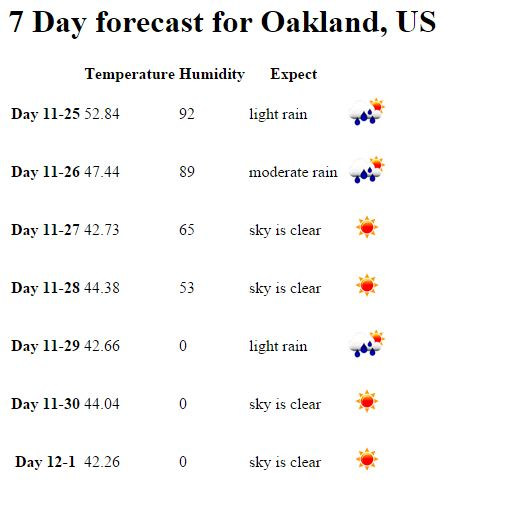

Get your API code Make the Call Everything But the Weather The Forecast Pulling it Together
So I have taken you through getting your API Key so you may get the data, putting together a call to get the data you would like, and how to dissect the returned JSON. Now it is time to use that data to create a forecast. In this, example I will use node.js with express and handlebars to display the forecast.
Here is the javascript showing the extraction of the data for the page.
app.get('/',function(req,res){
var context = {};
request('http://api.openweathermap.org/data/2.5/forecast/daily?APPID={APIKEY}&q=oakland&units=imperial&cnt=7', get7Day);
function get7Day(err, response, body){
if(!err && response.statusCode < 400){
var retData = JSON.parse(body);
var params = [];
var day = new Date();
for(q in retData.list){
params.push(
{'daynum': day.getMonth()+1+"-"+day.getDate(),
'temp':JSON.stringify(retData.list[q].temp.day),
'hum':JSON.stringify(retData.list[q].humidity),
'des':retData.list[q].weather[0].description,
'icon':retData.list[q].weather[0].icon});
day.setDate(day.getDate()+1);
}
context.city = retData.city.name+", "+retData.city.country;
context.forecast = params;
res.render('7Day',context);
}
else{
console.log(err);
console.log(response.statusCode);
}
}
});
So explaining this line by line, we first make a get request. Just before we send it we create a variable for the context which will store the data to be sent to the HTML for display. The request is made and the get7Day function is called. Inside of which we check for error, and if there is none we continue with parsing out the return data. We set up an array to hold the info needed for the forecast itself. We set the date, and get into a for loop. Inside the for loop we are going through the returned data day by day packaging the date, temperature, humidity, description, and icon into a JSON object that is added to the array. We also increment the date inside the loop as we go. After the loop we add the city name, country, and the forecast we created within the loop to the context and then render the page.
With all the data extracted, lets look at the HTML that houses all of it. First will be the layout, which is really basic, followed by the view which is where the rest of the magic happens.
<!DOCTYPE html>
<html>
<head>
<title>Weather Report</title>
</head>
<body>
{{{body}}}
</body>
</html>
<h1>7 Day forecast for {{city}}</h1>
<table>
<tr>
<th></th>
<th>Temperature</th>
<th>Humidity</th>
<th>Expect</th>
</tr>
{{#each forecast}}
<tr>
<th>Day {{this.daynum}}</th>
<td>{{this.temp}}</td>
<td>{{this.hum}}</td>
<td>{{this.des}}</td>
<td><img src="http://openweathermap.org/img/w/{{this.icon}}.png"></td>
</tr>
{{/each}}
</table>
The body of the layout contains the view. Inside the view you can see all the information we stored in the javascript being displayed. The for each loop is responsible for building the table. The icon is properly plugged into the image source so it properly displays. If all of this is built and the directories are correct, you will get a basic fore cast like this
Previous